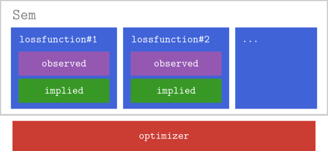
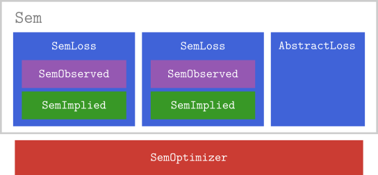

Our Concept of a Structural Equation Model
In our package, a structural equation model (a Sem) is built from one or more loss terms. Fitting the model means finding the parameters that minimize the (weighted) sum of all of its loss terms. This simple idea is remarkably general: within the same structure it covers a single SEM fit by maximum likelihood, a regularized SEM (e.g. maximum likelihood plus a ridge penalty), and multigroup models (one SEM term per group).

A loss term is anything of type AbstractLoss — a function that maps the model parameters to a number that should be minimized. There are two kinds of loss terms:
- SEM loss functions (
SemLoss), such asSemML,SemWLSandSemFIML, measure how well the model explains the data. To do so, eachSemLossbundles its own observed part (the data) and implied part (what the model implies about the data). They are the heart of a SEM. - Other loss functions, such as the regularization terms
SemRidgeandSemConstant, depend only on the parameters and therefore need neither an observed nor an implied part.
Because a model is just a (weighted) sum of loss terms, you can freely combine them. For example, ridge-regularized full information maximum likelihood estimation is a model with two loss terms, a SemFIML term and a SemRidge term. A two-group model is a model with two SemML terms, one per group, weighted by the respective sample sizes.
All models are subtypes of AbstractSem. The default Sem computes the weighted sum of its loss terms together with their (analytic) gradients. SemFiniteDiff is an alternative that approximates the gradient with finite differences, which is useful for loss functions that do not provide an analytic gradient.
The parts of a SEM loss
Each SEM loss function (SemLoss) is itself composed of interchangeable building blocks (like 'Legos'): an observed part and an implied part. To make precise which objects can play each role, we require them to have a certain type:

So everything that can serve as the observed part has to be of type SemObserved, everything that can serve as the implied part has to be of type SemImplied, and the loss function that combines them is a SemLoss. To fit the model, you additionally choose a SemOptimizer; it connects to the numerical optimization backend but is not itself part of the model.
Here is an overview on the available building blocks:
SemObserved | SemImplied | AbstractLoss | SemOptimizer |
|---|---|---|---|
SemObservedData | RAM | SemML | :Optim |
SemObservedCovariance | RAMSymbolic | SemWLS | :NLopt |
SemObservedMissing | ImpliedEmpty | SemFIML | :Proximal |
SemRidge | |||
SemConstant |
The rest of this page explains each building block and the available options. After that, the API - model parts section serves as a reference for detailed explanations. (How to stick the building blocks together into a final model is explained in the section on Model Construction.)
The observed part aka SemObserved
The observed part contains all necessary information about the observed data, and pre-computes the statistics a loss function needs from it — for example the observed covariance matrix, or the different patterns of missingness used for full information maximum likelihood (FIML) estimation. Currently, we have three options: SemObservedData for fully observed datasets, SemObservedCovariance for observed covariances (and means) and SemObservedMissing for data that contains missing values.
The implied part aka SemImplied
The implied part defines how the model-implied statistics (for example, the model-implied covariance matrix and mean vector) are computed from the parameters. There are two options at the moment: RAM, which uses the reticular action model to compute the model implied covariance matrix, and RAMSymbolic which does the same but symbolically pre-computes part of the model, which increases subsequent performance in model fitting (see Symbolic precomputation). There is also a third option, ImpliedEmpty that can serve as a 'placeholder' for loss terms that do not need an implied part.
The loss functions aka AbstractLoss
The loss terms specify the objective that is minimized to find the parameter estimates; a model minimizes the (weighted) sum of all its loss terms. SEM loss functions (SemLoss) compare what the model implies to the observed data, while regularization terms depend only on the parameters. Available loss functions are
SemML: maximum likelihood estimationSemWLS: weighted least squares estimationSemFIML: full-information maximum likelihood estimationSemRidge: ridge regularizationSemConstant: adds a constant to the objective
The optimizer aka SemOptimizer
The optimizer connects to the numerical optimization backend used to fit the model. It is not part of the model itself, but it is chosen when fitting (see Model fitting). It can be used to control options like the optimization algorithm, linesearch, stopping criteria, etc. There are currently three available engines (i.e., backends used to carry out the numerical optimization), :Optim connecting to the Optim.jl backend, :NLopt connecting to the NLopt.jl backend and :Proximal connecting to ProximalAlgorithms.jl. For more information about the available options see also the tutorials about Using Optim.jl and Using NLopt.jl, as well as Constrained optimization and Regularization .
What to do next
You now have an understanding of our representation of structural equation models.
To learn more about how to use the package, you may visit the remaining tutorials.
If you want to learn how to extend the package (e.g., add a new loss function), you may visit Extending the package.
API - model parts
observed
StructuralEquationModels.SemObserved — Type
abstract type SemObservedSupertype of all objects that can serve as the observed field of a SEM. Pre-processes data and computes sufficient statistics for example. If you have a special kind of data, you should implement a subtype of SemObserved.
StructuralEquationModels.SemObservedData — Type
For observed data without missings.
Constructor
SemObservedData(;
data,
observed_vars = nothing,
specification = nothing,
kwargs...)Arguments
data: observed data – DataFrame or Matrixobserved_vars::Vector{Symbol}: column names of the data (if the object passed as data does not have column names, i.e. is not a data frame)specification: optional SEM specification (SemSpecification)
Extended help
Interfaces
nsamples(::SemObservedData)-> number of observed data pointsnobserved_vars(::SemObservedData)-> number of observed (manifested) variablessamples(::SemObservedData)-> observed dataobs_cov(::SemObservedData)-> observed covariance matrixobs_mean(::SemObservedData)-> observed mean vector
StructuralEquationModels.SemObservedCovariance — Type
Type alias for SemObservedData that has mean and covariance, but no actual data.
For instances of SemObservedCovariance samples returns nothing.
StructuralEquationModels.SemObservedMissing — Type
SemObservedMissing{T <: Real, S <: Real} <: SemObservedSemObserved implementation for data with missing values.
Constructor
SemObservedMissing(;
data,
observed_vars = nothing,
specification = nothing,
lazy_cov = true,
em_kwargs...)Arguments
data: observed dataobserved_vars::Vector{Symbol}: column names of the data (if the object passed as data does not have column names, i.e. is not a data frame)specification: optional SEM model specification (SemSpecification)lazy_cov::Bool: whether to defer covariance and mean calculation until requested (default:true)em_kwargs...: keyword arguments to pass to the EM algorithm (seeem_mvn)
SemObservedMissing could be used in combination with SemFIML loss for the full information maximum likelihood (FIML) to fit SEM with missing data. It could also be used with other loss functions, e.g. SemML; in that case the approximated observed covariance and mean would be calculated using the EM algorithm (see em_mvn).
StructuralEquationModels.samples — Function
samples(observed::SemObservedData)Gets the matrix of observed data samples. Rows are samples, columns are observed variables.
See Also
StructuralEquationModels.observed_vars — Function
observed_vars(semobj) -> Vector{Symbol}Return the vector of SEM model observed variable in the order specified by the model, which also should match the order of variables in SemObserved.
StructuralEquationModels.SemSpecification — Type
abstract type SemSpecification endBase type for all SEM specifications.
StructuralEquationModels.em_mvn — Function
em_mvn(patterns::AbstractVector{SemObservedMissingPattern};
max_iter_em = 100,
rtol_em = 1e-4,
max_nsamples_em = nothing,
min_eigval = nothing,
start_em = start_em_observed,
start_kwargs...)Estimate the covariance and the mean for data with missing values using the expectation maximization (EM) algorithm.
Arguments
patterns: the observed data with missing values, grouped by missingness pattern (each pattern is aSemObservedMissingPattern)max_iter_em: the maximum number of EM iterationsrtol_em: the relative tolerance for convergence of the EM algorithmmax_nsamples_em: the maximum number of samples to use for each pattern in each EM iteration, by default all samples are used, but for large datasets it may be desirable to use a random subset of the data for each pattern in each EM iteration to speed up the algorithmmin_eigval: the minimum eigenvalue for the covariance matrix; if notnothing, the covariance matrix is regularized in each EM iteration to ensure that all eigenvalues are not smaller thanmin_eigval, which can help with convergence;start_em: the function to generate starting values for the EM algorithm, by defaultstart_em_observedwhich uses the mean and covariance of the full cases if availablestart_kwargs...: keyword arguments to pass to thestart_emfunction
Returns the tuple of the covariance matrix and the mean vector for the estimated multivariate normal (MVN) distribution.
References
Based on the EM algorithm for MVN-distributed data with missing values adapted from the supplementary material to the book Machine Learning: A Probabilistic Perspective, copyright (2010) Kevin Murphy and Matt Dunham: see gaussMissingFitEm.m and emAlgo.m scripts.
implied
StructuralEquationModels.SemImplied — Type
Supertype of all objects that can serve as the implied field of a SEM. Computes model-implied values that should be compared with the observed data to find parameter estimates, e. g. the model implied covariance or mean. If you would like to implement a different notation, e.g. LISREL, you should implement a subtype of SemImplied.
StructuralEquationModels.RAM — Type
Model implied covariance and means via RAM notation.
Constructor
RAM(specification; gradient = true, kwargs...)Arguments
specification: either aRAMMatricesorParameterTableobjectgradient::Bool: is gradient-based optimization used
Extended help
RAM notation
The model implied covariance matrix is computed as
\[ \Sigma = F(I-A)^{-1}S(I-A)^{-T}F^T\]
and for models with a meanstructure, the model implied means are computed as
\[ \mu = F(I-A)^{-1}M\]
Interfaces
param_labels(::RAM)-> vector of parameter labelsnparams(::RAM)-> number of parametersram.Σ-> model implied covariance matrixram.μ-> model implied mean vector
RAM matrices for the current parameter values:
ram.Aram.Sram.Fram.M
Jacobians of RAM matrices w.r.t to the parameter vector θ
ram.∇A-> $∂vec(A)/∂θᵀ$ram.∇S-> $∂vec(S)/∂θᵀ$ram.∇M= $∂M/∂θᵀ$
Vector of indices of each parameter in the respective RAM matrix:
ram.A_indicesram.S_indicesram.M_indices
Additional interfaces
F⨉I_A⁻¹(::RAM)-> $F(I-A)^{-1}$F⨉I_A⁻¹S(::RAM)-> $F(I-A)^{-1}S$I_A(::RAM)-> $I-A$
Only available in gradient! calls:
ram.I_A⁻¹-> $(I-A)^{-1}$
StructuralEquationModels.RAMSymbolic — Type
Subtype of SemImplied that implements the RAM notation with symbolic precomputation.
Constructor
RAMSymbolic(
specification;
vech = false,
gradient = true,
hessian = false,
approximate_hessian = false,
kwargs...)Arguments
specification: either aRAMMatricesorParameterTableobjectgradient::Bool: is gradient-based optimization usedhessian::Bool: is hessian-based optimization usedapproximate_hessian::Bool: for hessian based optimization: should the hessian be approximatedvech::Bool: should the half-vectorization of Σ be computed (instead of the full matrix) (automatically set to true if any of the loss functions is SemWLS)
Extended help
Interfaces
param_labels(::RAMSymbolic)-> vector of parameter idsnparams(::RAMSymbolic)-> number of parametersram.Σ-> model implied covariance matrixram.μ-> model implied mean vector
Jacobians (only available in gradient! calls)
ram.∇Σ-> $∂vec(Σ)/∂θᵀ$ram.∇μ-> $∂μ/∂θᵀ$∇Σ_eval!(::RAMSymbolic)-> function to evaluate∇Σin place, i.e.∇Σ_eval!(∇Σ, θ). Typically, you do not want to use this but simply queryram.∇Σ.
Hessians The computation of hessians is more involved. Therefore, we desribe it in the online documentation, and the respective interfaces are omitted here.
RAM notation
The model implied covariance matrix is computed as
\[ \Sigma = F(I-A)^{-1}S(I-A)^{-T}F^T\]
and for models with a meanstructure, the model implied means are computed as
\[ \mu = F(I-A)^{-1}M\]
StructuralEquationModels.ImpliedEmpty — Type
Empty placeholder for models that don't need an implied part. (For example, models that only regularize parameters.)
Constructor
ImpliedEmpty(specification; kwargs...)Arguments
specification: either aRAMMatricesorParameterTableobject
Examples
A multigroup model with ridge regularization could be specified as a Sem with one SEM term (SemLoss) per group and an additional SemRidge regularization term.
Extended help
Interfaces
param_labels(::ImpliedEmpty)-> Vector of parameter labelsnparams(::ImpliedEmpty)-> Number of parameters
loss functions
StructuralEquationModels.AbstractLoss — Type
Supertype for all loss functions of SEMs. If you want to implement a custom loss function, it should be a subtype of AbstractLoss.
StructuralEquationModels.SemLoss — Type
abstract type SemLoss{O <: SemObserved, I <: SemImplied} <: AbstractLossThe base type for calculating the loss of the implied SEM model when explaining the observed data.
All subtypes of SemLoss should have the following fields:
observed::O: object of subtypeSemObserved.implied::I: object of subtypeSemImplied.
StructuralEquationModels.SemML — Type
Maximum likelihood estimation.
Constructor
SemML(observed, implied, refloss = nothing; approximate_hessian = false)Arguments
observed::SemObserved: the observed part of the modelimplied::SemImplied:SemImpliedinstancerefloss::Union{SemML, Nothing}: optional reference loss used to preserve loss-specific configuration and share the internal state when rebuilding a loss term, e.g. inreplace_observedapproximate_hessian::Bool: if hessian-based optimization is used, should the hessian be swapped for an approximation
Examples
my_ml = SemML(my_observed, my_implied)Interfaces
Analytic gradients are available, and for models without a meanstructure and RAMSymbolic implied type, also analytic hessians.
StructuralEquationModels.SemFIML — Type
SemFIML{O, I, T, W} <: SemLoss{O, I}Full information maximum likelihood (FIML) estimation. Can handle observed data with missing values.
Constructor
SemFIML(observed::SemObservedMissing, implied::SemImplied, refloss = nothing)Arguments
observed::SemObservedMissing: the observed part of the model (seeSemObservedMissing)implied::SemImplied: the implied part of the model (seeSemImplied)refloss::Union{SemFIML, Nothing}: optional reference loss used to preserve loss-specific configuration and share the internal state when rebuilding a loss term, e.g. inreplace_observed
Examples
my_fiml = SemFIML(my_observed, my_implied)Interfaces
Analytic gradients are available.
StructuralEquationModels.SemWLS — Type
Weighted least squares estimation. At the moment only available with the RAMSymbolic implied type.
Constructor
SemWLS(
observed::SemObserved, implied::SemImplied, refloss = nothing;
wls_weight_matrix = nothing,
wls_weight_matrix_mean = nothing,
approximate_hessian = false,
kwargs...)Arguments
observed: theSemObservedpart of the modelimplied: theSemImpliedpart of the modelrefloss::Union{SemWLS, Nothing}: optional reference loss used to preserve loss-specific configuration and share the internal state when rebuilding a loss term, e.g. inreplace_observedapproximate_hessian::Bool: should the hessian be swapped for an approximationwls_weight_matrix: the weight matrix for weighted least squares. Defaults to GLS estimation ($0.5*(D^T*kron(S,S)*D)$ where D is the duplication matrix and S is the inverse of the observed covariance matrix)wls_weight_matrix_mean: the weight matrix for the mean part of weighted least squares. Defaults to GLS estimation (the inverse of the observed covariance matrix)
Examples
my_wls = SemWLS(my_observed, my_implied)Interfaces
Analytic gradients are available, and for models without a meanstructure also analytic hessians.
StructuralEquationModels.SemRidge — Type
Ridge regularization.
Constructor
SemRidge(;α_ridge, which_ridge, nparams, parameter_type = Float64, implied = nothing, kwargs...)Arguments
α_ridge: hyperparameter for penalty termwhich_ridge::Vector: Vector of parameter labels (Symbols) or indices that indicate which parameters should be regularized.nparams::Int: number of parameters of the modelimplied::SemImplied: implied part of the modelparameter_type: type of the parameters
Examples
my_ridge = SemRidge(;α_ridge = 0.02, which_ridge = [:λ₁, :λ₂, :ω₂₃], nparams = 30, implied = my_implied)Interfaces
Analytic gradients and hessians are available.
StructuralEquationModels.SemConstant — Type
SemConstant{C <: Number} <: AbstractLossConstant loss term. Can be used for comparability to other packages.
Constructor
SemConstant(;constant_loss, kwargs...)Arguments
constant_loss::Number: constant to add to the objective
Examples
my_constant = SemConstant(42.0)Interfaces
Analytic gradients and hessians are available.
optimizer
StructuralEquationModels.optimizer_engines — Function
optimizer_engines()Returns a vector of optimizer engines supported by the engine keyword argument of the SemOptimizer constructor.
The list of engines depends on the Julia packages loaded (with the using directive) into the current session.
StructuralEquationModels.optimizer_engine — Function
optimizer_engine(::Type{<:SemOptimizer})
optimizer_engine(::SemOptimizer)Returns the engine name (Symbol) for a SemOptimizer instance or subtype.
StructuralEquationModels.optimizer_engine_doc — Function
optimizer_engine_doc(engine::Symbol)Shows documentation for the optimizer engine.
For a list of available engines, call optimizer_engines.
StructuralEquationModels.SemOptimizer — Type
SemOptimizer(args...; engine::Symbol = :Optim, kwargs...)Constructs a SemOptimizer object that can be passed to fit for specifying aspects of the numerical optimization involved in fitting a SEM.
The keyword engine controlls which Julia package is used, with :Optim being the default.
optimizer_engines()prints a list of currently available engines.optimizer_engine_doc(EngineName)prints information on the usage of a specific engine.
More engines become available if specific packages are loaded, for example NLopt.jl (also see Constrained optimization in the online documentation) or ProximalAlgorithms.jl (also see Regularization in the online documentation).
The arguments args... and kwargs... are engine-specific and control further aspects of the optimization process, such as the algorithm, convergence criteria or constraints. Information on those can be accessed with optimizer_engine_doc.
Custom optimizer types shows how to connect the SEM.jl package to a completely new optimization engine.
StructuralEquationModels.SemOptimizerOptim — Type
SemOptimizer(;
engine = :Optim,
algorithm = LBFGS(),
options = Optim.Options(;f_reltol = 1e-10, x_abstol = 1.5e-8),
kwargs...)Connects to Optim.jl as the optimization engine.
For more information on the available algorithms and options, see the Optim.jl docs.
Arguments
algorithm: optimization algorithm from Optim.jloptions::Optim.Options: options for the optimization algorithm
Examples
# hessian based optimization with backtracking linesearch and modified initial step size
using Optim, LineSearches
my_newton_optimizer = SemOptimizer(
engine = :Optim,
algorithm = Newton(
;linesearch = BackTracking(order=3),
alphaguess = InitialHagerZhang()
)
)Constrained optimization
When using the Fminbox or SAMIN constrained optimization algorithms, the vector or dictionary of lower and upper bounds for each model parameter can be specified via lower_bounds and upper_bounds keyword arguments. Alternatively, the lower_bound and upper_bound keyword arguments can be used to specify the default bound for all non-variance model parameters, and the variance_lower_bound and variance_upper_bound keyword – for the variance parameters (the diagonal of the S matrix).
SEMNLOptExt.SemOptimizerNLopt — Type
SemOptimizer(;
engine = :NLopt,
algorithm = :LD_LBFGS,
options = Dict{Symbol, Any}(),
local_algorithm = nothing,
local_options = Dict{Symbol, Any}(),
equality_constraints = nothing,
inequality_constraints = nothing,
constraint_tol::Number = 0.0,
kwargs...)Uses NLopt.jl as the optimization engine. For more information on the available algorithms and options, see the NLopt.jl package and the NLopt docs.
Arguments
algorithm: optimization algorithm.options::Dict{Symbol, Any}: options for the optimization algorithmlocal_algorithm: local optimization algorithmlocal_options::Dict{Symbol, Any}: options for the local optimization algorithm- `equality_constraints: optional equality constraints
- `inequality_constraints:: optional inequality constraints
constraint_tol::Number: default tolerance for constraints
Constraints specification
Equality and inequality constraints arguments could be a single constraint or any iterable constraints container (e.g. vector or tuple). Each constraint could be a function or any other callable object that takes the two input arguments:
- the vector of the model parameters;
- the array for the in-place calculation of the constraint gradient.
To override the default tolerance, the constraint can be specified as a pair of the function and its tolerance: constraint_func => tol. For information on how to use inequality and equality constraints, see Constrained optimization in our online documentation.
Example
my_optimizer = SemOptimizer(engine = :NLopt)
# constrained optimization with augmented lagrangian
my_constrained_optimizer = SemOptimizer(;
engine = :NLopt,
algorithm = :AUGLAG,
local_algorithm = :LD_LBFGS,
local_options = Dict(:ftol_rel => 1e-6),
inequality_constraints = (my_constraint => tol),
)Interfaces
algorithm(::SemOptimizerNLopt)local_algorithm(::SemOptimizerNLopt)options(::SemOptimizerNLopt)local_options(::SemOptimizerNLopt)equality_constraints(::SemOptimizerNLopt)inequality_constraints(::SemOptimizerNLopt)
SEMProximalOptExt.SemOptimizerProximal — Type
SemOptimizerProximal(;
algorithm = ProximalAlgorithms.PANOC(),
operator_g,
operator_h = nothing,
kwargs...,
)Connects to ProximalAlgorithms.jl as the optimization backend. For more information on the available algorithms and options, see the online docs on Regularization and the documentation of ProximalAlgorithms.jl / ProximalOperators.jl.
Arguments
algorithm: proximal optimization algorithm.operator_g: proximal operator (e.g., regularization penalty)operator_h: optional second proximal operator